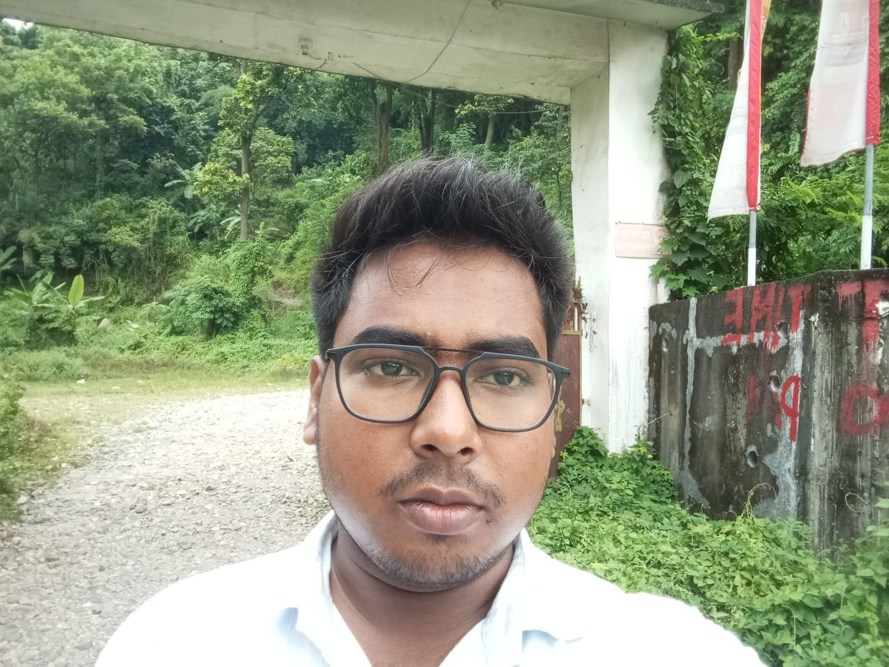

Electronics & Communication Engineer | AI & Embedded Systems
An aspiring Electronics and Communication Engineer with a strong focus on Deep Learning and Embedded Systems. I specialize in developing AI-powered assistive technologies and Biomedical Signal Processing systems. With a consistent academic record and a proven ability to deploy Computer Vision models on edge hardware, I am passionate about bridging the gap between complex neural architectures and constrained embedded environments.
SGPA: 9.39 (1st Sem) | 9.23 (2nd Sem) | 9.00 (3rd Sem)
Class XII Score: 61%
Class X Score: 92%